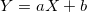
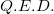

Yesterday I was trying to brush up my skills in probability and came upon this formula on the Wikipedia page about variance:
The article calls this the Bienaymé formula and gives neither proof nor a link to one. Googling this formula proved equally fruitless in terms of proofs.
So, I set out to find why this works. It took me a few hours of digging through books and removing dust from my University-learned probability skills of 8 years ago, but finally I've made it. Here's how.
Note: the Wikipedia article states the Bienaymé formula for uncorrelated variables. Here I'll prove the case of independent variables, which is a more useful and frequently used application of the formula. I'm also proving it for discrete random variables - the continuous case is equivalent.
Expected value and variance
We'll start with a few definitions. Formally, the expected value of a (discrete) random variable X is defined by:
Where is the PMF of X, . For a function :The variance of X is defined in terms of the expected value as:
From this we can also obtain:
Which is more convenient to use in some calculations.Linear function of a random variable
From the definitions given above it can be easily shown that given a linear function of a random variable: , the expected value and variance of Y are:
For the expected value, we can make a stronger claim for any g(x):
Multiple random variables
When multiple random variables are involved, things start getting a bit more complicated. I'll focus on two random variables here, but this is easily extensible to N variables. Given two random variables that participate in an experiment, their joint PMF is:
The joint PMF determines the probability of any event that can be specified in terms of the random variables X and Y. For example if A is the set of all pairs that have a certain property, then:
Note that from this PMF we can infer the PMF for a single variable, like this:
The expected value for functions of two variables naturally extends and takes the form:
Sum of random variables
Let's see how the sum of random variables behaves. From the previous formula:
But recall equation (1). The above simply equals to:
We'll also want to prove that . This is only true for independent X and Y, so we'll have to make this assumption (assuming that they're independent means that ).
By independence:
A very similar proof can show that for independent X and Y:
For any functions g and h (because if X and Y are independent, so are g(X) and h(y)). Now, at last, we're ready to tackle the variance of X + Y. We start by expanding the definition of variance:
By (2):
Now, note that the random variables and  are independent, so:
are independent, so:
So, coming back to the long expression for the variance of sums, the last term is 0, and we have:

As I've mentioned before, proving this for the sum of two variables suffices, because the proof for N variables is a simple mathematical extension, and can be intuitively understood by means of a "mental induction". Therefore:
For N independent variables . 